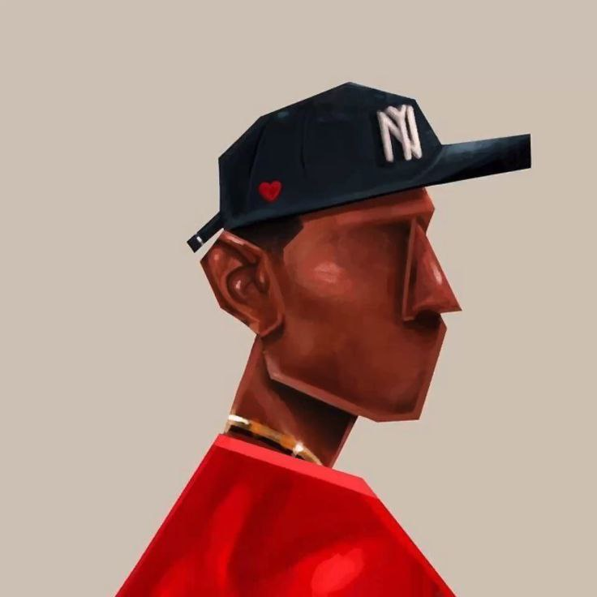
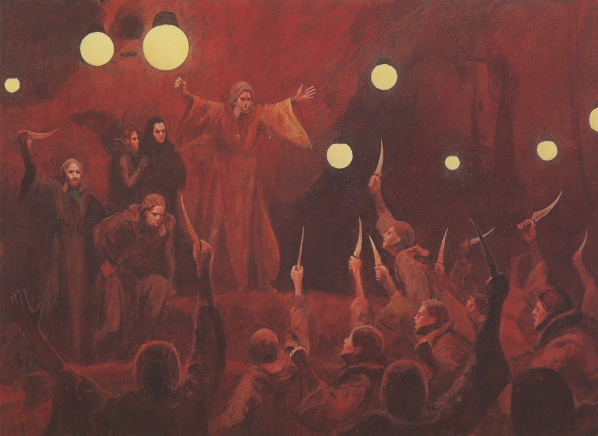

# My First Project
This project is a web-based application built with Python and Django. It's a simple to-do list manager that allows users to add, edit, and delete tasks. It focuses on user authentication and database management.
View on GitHub
# Portfolio Website
A responsive personal portfolio website created using HTML, CSS, and JavaScript. This project demonstrates front-end development skills and a clean design aesthetic. It includes sections for an about page, blog, and projects.
View on GitHub# The Hydra
A responsive personal portfolio website created using HTML, CSS, and JavaScript. This project demonstrates front-end development skills and a clean design aesthetic. It includes sections for an about page, blog, and projects.
View on GitHub
# De Great Project
A responsive personal portfolio website created using HTML, CSS, and JavaScript. This project demonstrates front-end development skills and a clean design aesthetic. It includes sections for an about page, blog, and projects.
View on GitHub